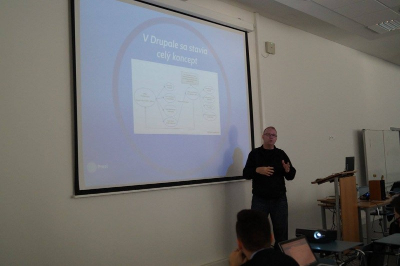

PF 2016
Rok 2015 končí už o pár hodín a nastal teda najvyšší čas bilancovať uplynulý rok.
Rok 2015 bol pre Drupal a teda aj našu komunitu prelomový v niekoľkých ohľadoch:
Vydanie Drupal 8
Po niekoľkých rokoch čakania sme sa konečne dočkali vydania
očakávaného Drupal 8. Drupal 8 znamená okrem technických a
používateľských vylepšení aj rozšírenie našej komunity o ľudí zo
Symfony komunity, pre ktorých sa znížila latka na vývoj v Drupal 8.
Vydanie sme samozrejme aj patrične oslávili – zorganizovali sme malú
párty v Bratislave s tortou, modrými drinkami a prednáška o Drupal
8 tiež nemohla chýbať.
/index.jpg)
Ak ste vytvorili niečo v Drupal 8 alebo sa chcete iba pochváliť s vaším
top portfóliom, pridajte svoju prácu na komunita.drupal.sk.
DrupalCamp CS
Po dvoch rokoch sme zorganizovali aj ďalší ročník
DrupalCamp-u v Bratislave. Tento krát sme spojili úsilie s našími
českými kamarátmi a pritiahli sme špičkových prednášajúcich do
Bratislavy. Viac o campe si prečítajte tu.
Prezentovanie Drupalu na neDrupal podujatiach
Tento rok sme Drupal úspešne odprezentovali na 2 podujatiach –
OpenSource víkende vo februári Miro prezentoval o Drupal 8 a v septembri
Vilo prezentoval o princípoch Drupalu na konferenii CodeCon.

Kurzy certifikované Slovenskou Drupal Asociáciou
Na jeseň sme ako Slovenská Drupal Asociácia zogranizovali
12 týždňový kurz DrupalOdPodlahy a hrdo sme odovzdali certifikáty prvým
dvom úspešným absolventom na úrovni site builder.  Okrem tohto kurzu sme v termíne Global Training Day
zorganizovali aj celodenné školenie o Drupal 8, kde sme 14 účastníkom
vysvetlili podstatu Drupalu a ukázali nové vlastnosti Drupal 8.
Okrem tohto kurzu sme v termíne Global Training Day
zorganizovali aj celodenné školenie o Drupal 8, kde sme 14 účastníkom
vysvetlili podstatu Drupalu a ukázali nové vlastnosti Drupal 8.
Nová komunitná stránka
Tento rok sme niekoľko krát začali pracovať na novej komunitnej
stránke. Vyskúšali sme tradičný prístup, kde sme chceli mať všetko
tip-top spracované, otestovali sme možnosti Drupal 8 a Backbone ako decoupled
aplikácie.
Nakoniec sme zvolili agilný prístup, kedy pomaly migrujeme rôzne vlastnosti
z pôvodného webu na nový komunitný portál komunita.drupal.sk
Pravidelné stretnutia komunity
Tento rok sa nám podarilo zorganizovať 8 meetupov na ktorých sa
dokopy stretlo takmer 100 ľudí. Rozoberali sme rôzne témy od SEO
optimalizácií cez nové multijazyčné vlastnosti Drupal 8 až po
programátorské hacketony.
 V nasledujúcom roku chceme prinášať stretnutia
pravidelnejšie so zaujímavými témami a priniesť viac Symfony vývojárov do
Drupal komunity.
V nasledujúcom roku chceme prinášať stretnutia
pravidelnejšie so zaujímavými témami a priniesť viac Symfony vývojárov do
Drupal komunity.
Ďakujeme vám za podporu v tomto roku a prajeme vám veľa úspechov v novom roku 2016.
P.S. Už čoskoro začneme plánovať aktivity na ďalší rok. Ak by ste chceli prispieť k plánu, napíšte nám na info@drupal.sk alebo prídite na naše stretnutie 8. januára (viac detailov tiež na info@drupal.sk)